Why one dialysis plan does not fit everyoneBakit hindi akma sa lahat ang iisang plano ng dialysisNganong dili mohaum sa tanan ang usa ra ka plano sa dialysisBakit e makaukyat king sablang tau ing metung mu a plano ning dialysis
Every dialysis unit follows standard safety rules: clean water, checked machines, measured blood tests, and a prescription your doctor signs. These rules protect everyone. But two people with the same prescription can feel very different afterward. One walks home and cooks dinner; the other sleeps until evening. Personalized care means your team adjusts the plan to your body, your symptoms, and your life — while keeping the safety rules in place.Bawat dialysis unit ay sumusunod sa karaniwang mga patakaran sa kaligtasan: malinis na tubig, sinuring makina, sinukat na pagsusuri ng dugo, at reseta na pinirmahan ng inyong doktor. Pinoprotektahan ng mga patakarang ito ang lahat. Ngunit ang dalawang tao na may parehong reseta ay maaaring magkaiba ang pakiramdam pagkatapos. Ang isa ay naglalakad pauwi at nagluluto ng hapunan; ang isa naman ay natutulog hanggang gabi. Ang personal na pangangalaga ay nangangahulugang inaangkop ng inyong team ang plano sa inyong katawan, inyong mga sintomas, at inyong buhay — habang nananatili ang mga patakaran sa kaligtasan.Ang matag dialysis unit nagsunod sa sukaranang mga lagda sa kaluwasan: limpyo nga tubig, nasusi nga makina, gisukod nga pagsusi sa dugo, ug reseta nga gipirmahan sa imong doktor. Kini nga mga lagda nanalipod sa tanan. Apan ang duha ka tawo nga parehas og reseta mahimong lahi kaayo ang pamati human niini. Ang usa molakaw pauli ug moluto og panihapon; ang usa matulog hangtod sa gabii. Ang personal nga pag-atiman nagpasabot nga i-angay sa imong team ang plano sa imong lawas, imong mga sintomas, ug imong kinabuhi — samtang magpabilin ang mga lagda sa kaluwasan.Balang dialysis unit tutuki king karaniwang tuntunan para king kaligtasan: malinis a danum, sinuring makina, sinukat a pamanyubuk king daya, at reseta a pirmaan ning kekayung doktor. Pruteksyunan da ring sablang tau deng tuntunan a reti. Oneng ing adwang tau a pareu ing reseta, maliari dang mabiyasang aliwa ing pamakiramdam kaibat na. Ing metung, lumakad pauli at magluto pangabingi; ing aliwa, matudtud anggang gatpanapun. Ing personal a pamanalaga, kayabe na na ing team yu ing plano king kekayung katawan, kekayung sintomas, at kekayung bie — kabang atiu la pa murin deng tuntunan king kaligtasan.
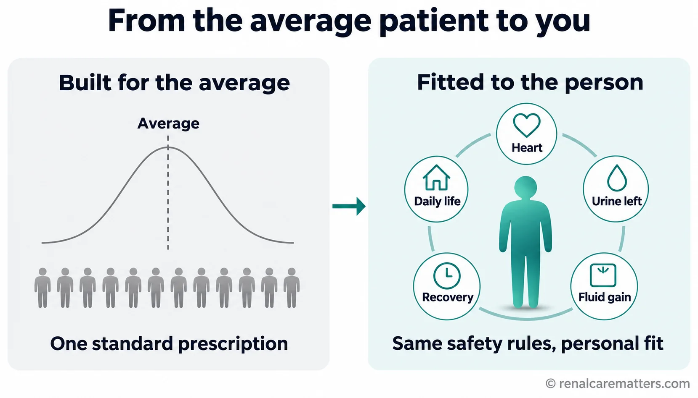
A standard prescription is designed for an average patient. Precision dialysis keeps the safety rules and fits the plan to your own body and life.Ang karaniwang reseta ay ginawa para sa karaniwang pasyente. Pinananatili ng precision dialysis ang mga patakaran sa kaligtasan at iniaangkop ang plano sa sarili ninyong katawan at buhay.Ang sukaranang reseta gidisenyo alang sa kasagarang pasyente. Ang precision dialysis nagpabilin sa mga lagda sa kaluwasan ug nag-angay sa plano sa imong kaugalingong lawas ug kinabuhi.Ing karaniwan a reseta, gawa ya para king karaniwan a pasyenti. Ing precision dialysis panatilian na la reng patakaran king kaligtasan at iangkop ne ing plano king sarili mung katawan at bie.
© renalcarematters.comHere is one reason why. Dialysis takes extra fluid out of your blood, but most of that fluid is stored in your tissues — your legs, your belly, around your lungs. Think of a bathtub (your bloodstream) that is slowly refilled from a wet sponge (your tissues). If the machine drains the tub faster than the sponge can release water, the tub runs low even though the sponge is still wet. Your blood pressure drops, you may cramp or feel dizzy, and your heart works under strain. How fast the sponge refills is different for every person — it depends on your heart, your blood vessels, your protein levels, and how much fluid you gained since the last session.Narito ang isang dahilan. Inaalis ng dialysis ang sobrang likido mula sa inyong dugo, ngunit karamihan ng likidong iyon ay nakaimbak sa inyong mga tisyu — sa binti, tiyan, at paligid ng baga. Isipin ang isang bathtub (ang inyong daluyan ng dugo) na dahan-dahang pinupuno mula sa basang espongha (ang inyong mga tisyu). Kung mas mabilis ubusin ng makina ang tubig sa tub kaysa sa kayang ilabas ng espongha, bababa ang tubig sa tub kahit basa pa ang espongha. Bumababa ang presyon ng dugo, maaari kayong pulikatin o mahilo, at nahihirapan ang puso. Iba-iba sa bawat tao kung gaano kabilis mapuno ang espongha — depende ito sa puso, mga ugat, antas ng protina, at kung gaano karaming likido ang naipon mula noong huling sesyon.Ania ang usa ka hinungdan. Ang dialysis nagkuha sa sobrang tubig gikan sa imong dugo, apan kadaghanan niini nga tubig gitipigan sa imong mga tisyu — sa tiil, tiyan, ug palibot sa baga. Hunahunaa ang usa ka bathtub (ang imong agianan sa dugo) nga hinay-hinay nga gipuno gikan sa basa nga espongha (ang imong mga tisyu). Kon mas paspas ang makina sa paghaw-as sa tub kaysa sa pagpagawas sa tubig sa espongha, mokunhod ang tubig sa tub bisan basa pa ang espongha. Mous-os ang presyon sa dugo, mahimo kang kulumbuton o malipong, ug maglisod ang kasingkasing. Lahi-lahi sa matag tawo kon unsa kapaspas mapuno ang espongha — depende kini sa kasingkasing, mga ugat, lebel sa protina, ug kon pila ka tubig ang natigom sukad sa miaging sesyon.Ini ing metung a sangkan. Ilalan ning dialysis ing labis a danum king kekayung daya, oneng ing kayaliwan na niting danum makatagu king kekayung tisyu — king bitis, atiyan, at libut ning baga. Isipan yu ing metung a bathtub (ing dalanan ning daya yu) a dahan-dahan a pupunan ning basang espongha (deng tisyu yu). Nung mas mabilis ing makina king pamanubus king tub kesa king kaya ning espongha a ilual ing danum, mababa ing danum king tub maski basa pa ing espongha. Mababa ing presyon ning daya, maliari kayung pulikatan o malisan, at mipagal ing pusu. Aliwa-aliwa king balang tau nung nanung kabilis mapunan ing espongha — makayabe ya king pusu, ugat, protina, at nung pilan ing danum a meyipun manibat king milabas a sesyon.
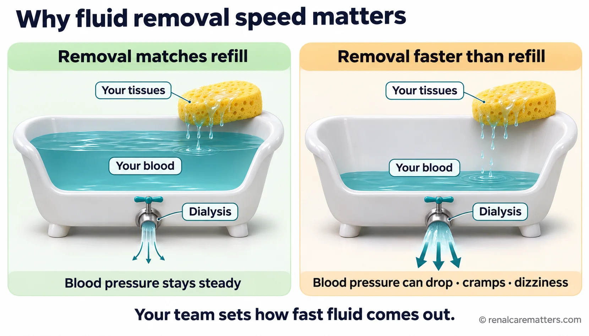
Dialysis removes fluid from your blood, while your tissues refill it at their own speed. Removing it faster than they refill can drop your blood pressure.Inaalis ng dialysis ang likido mula sa inyong dugo, habang pinupunan ito ng inyong mga tissue sa sarili nilang bilis. Kapag mas mabilis ang pag-alis kaysa sa pagpuno, maaaring bumaba ang inyong presyon.Ang dialysis nagkuha og tubig gikan sa imong dugo, samtang ang imong mga tissue nagpuno niini sa ilang kaugalingong kapaspas. Kon mas paspas ang pagkuha kaysa sa pagpuno, mahimong mous-os ang imong presyon.Ilalako ning dialysis ing danum king daya mu, kabang pupunan de reng tissue mu king sarili dang kalagsana. Nung mas malagua ing pamanlako kesa king pamamuno, maliaring mibaba ing presyon mu.
© renalcarematters.comA second reason: the main lab number used to check dialysis, called Kt/V, measures how well the machine removes one small waste product (urea). It is like judging how clean a kitchen is by looking only at the floor. A good Kt/V is important, but it does not tell your team whether you sleep well, itch, cramp, feel tired for a whole day, or can still do what matters to you. Only you can tell them that.Pangalawang dahilan: ang pangunahing numero sa laboratoryo para suriin ang dialysis, na tinatawag na Kt/V, ay sumusukat kung gaano kahusay inaalis ng makina ang isang maliit na dumi (urea). Para itong paghuhusga sa linis ng kusina sa pagtingin lamang sa sahig. Mahalaga ang magandang Kt/V, ngunit hindi nito sinasabi sa inyong team kung maayos ang tulog ninyo, kung nangangati, pinupulikat, pagod buong araw, o kung kaya pa ninyong gawin ang mahalaga sa inyo. Kayo lamang ang makapagsasabi niyon.Ikaduhang hinungdan: ang nag-unang numero sa laboratoryo nga gigamit sa pagsusi sa dialysis, nga gitawag og Kt/V, nagsukod kon unsa kaayo gikuha sa makina ang usa ka gamay nga hugaw (urea). Sama kini sa paghukom sa kalimpyo sa kusina pinaagi lang sa pagtan-aw sa salog. Importante ang maayong Kt/V, apan dili kini mosulti sa imong team kon maayo ba ang imong katulog, kon nangatol ka, gikulumbo, gikapoy tibuok adlaw, o kon makahimo ka pa sa mga butang nga importante kanimo. Ikaw ra ang makasulti niana.Ikaduang sangkan: ing pangunang numeru king laboratoryu a gamitan da para surian ing dialysis, a ausan dang Kt/V, susukatan na nung nanung kayap ilalan ning makina ing metung a malating dumi (urea). Kapareu ne ning pamanuri king kalinis ning kusina king pamanalakad mu king lapag. Mayalaga ing mayap a Kt/V, oneng e na sasabian king team yu nung mayap ya ing tudtud yu, nung makati ka, pulikatan, pagal king kabilang aldo, o nung kaya mu pang gawan ing mayalaga keka. Ika mu pamu ing makasabi kaniti.
In your own words: why can two people with the same prescription feel so different after dialysis?Sa sarili ninyong salita: bakit maaaring magkaiba ang pakiramdam ng dalawang taong may parehong reseta pagkatapos ng dialysis?Sa imong kaugalingong pulong: nganong lahi kaayo ang pamati sa duha ka tawo nga parehas og reseta human sa dialysis?King sarili mung amanu: bakit aliwa ing pamakiramdam ning adwang tau a pareu ing reseta kaibat ning dialysis?
Five ways dialysis can be fitted to youLimang paraan para iangkop ang dialysis sa inyoLima ka paagi aron i-angay ang dialysis kanimoLimang paralan bang iukyat ing dialysis keka
At a recent American Society of Nephrology Kidney Week, a lecture on fitting precision medicine into dialysis described a shift from treating the "average patient" to treating the person in the chair. It grouped the work into five areas. Some are available in almost every Philippine unit today; others are still being studied. Knowing which is which helps you ask the right questions.Sa isang kamakailang Kidney Week ng American Society of Nephrology, isang lektyur tungkol sa precision medicine sa dialysis ang naglarawan ng paglipat mula sa paggamot sa "karaniwang pasyente" tungo sa paggamot sa taong nakaupo sa upuan ng dialysis. Hinati nito ang gawain sa limang larangan. Ang ilan ay mayroon na sa halos lahat ng unit sa Pilipinas; ang iba ay pinag-aaralan pa. Ang pag-alam kung alin ang alin ay tumutulong sa inyong magtanong nang tama.Sa usa ka bag-o lang nga Kidney Week sa American Society of Nephrology, usa ka lektyur bahin sa precision medicine sa dialysis ang naghulagway sa pagbalhin gikan sa pagtambal sa "kasagarang pasyente" ngadto sa pagtambal sa tawo nga naglingkod sa lingkoranan sa dialysis. Gibahin niini ang buluhaton sa lima ka natad. Ang uban anaa na sa halos tanang unit sa Pilipinas; ang uban gitun-an pa. Ang pagkahibalo kon asa ang asa makatabang nimo sa pagpangutana sa husto.King metung a bayu-bayung Kidney Week ning American Society of Nephrology, metung a lektyur tungkul king precision medicine king dialysis ing milarawan king pamilipat manibat king panulu king "karaniwang pasyente" pamuntang king panulu king tau a makalukluk king silya ning dialysis. Binage na ing obra king limang larangan. Ing aliwa atiu na king alus sablang unit king Pilipinas; ing aliwa pag-aralan da pa. Ing pamakabalu nung nanu ing nanu, saup keka bang makakutang kang tama.
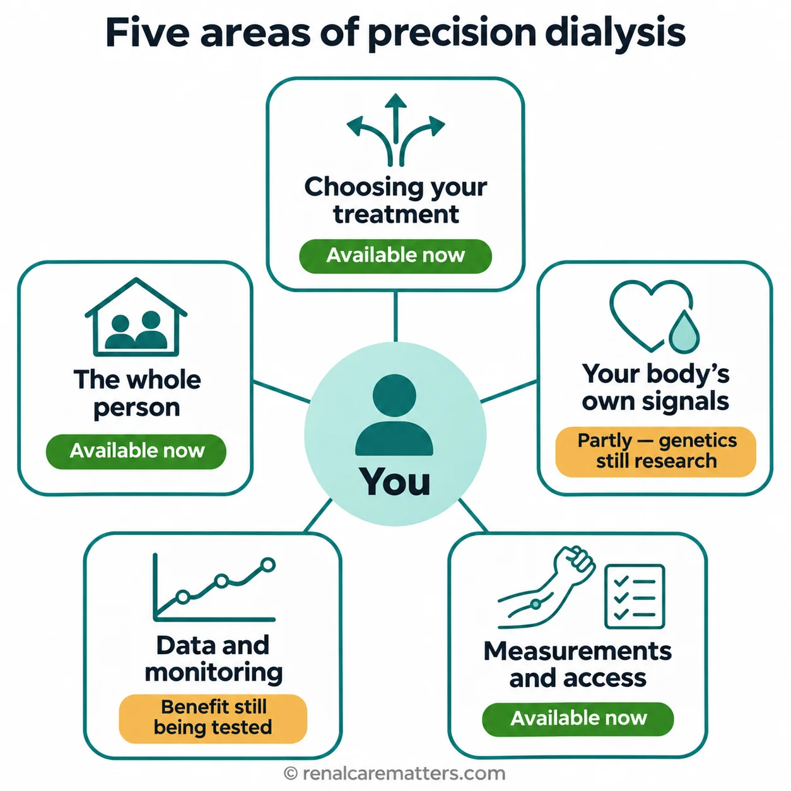
Five areas where dialysis can be fitted to you. Three are available in most units now; one is partly available, and one is still being tested.Limang larangan kung saan maiaangkop sa inyo ang dialysis. Tatlo ang magagamit na sa karamihan ng unit; ang isa ay bahagya pa lamang, at ang isa ay sinusubok pa.Lima ka natad diin ma-angay kanimo ang dialysis. Tulo ang anaa na sa kadaghanan sa mga unit; ang usa bahin pa lang, ug ang usa gisulayan pa.Limang larangan nung nu maiangkop keka ing dialysis. Atlu ing atiu na king kayaliwan da reng unit; ing metung bahagya pa mu, at ing metung susubukan pa.
© renalcarematters.com| AreaLaranganNatadLarangan | What it means for youAno ang kahulugan nito sa inyoUnsay buot ipasabot niini kanimoNanu ing kayulugan na keka | Where it standsKalagayan nitoKahimtang niiniKalagayan na |
|---|---|---|
| Choosing your treatmentPagpili ng gamutanPagpili sa pagtambalPamamili king panulu | Your health, wishes, and home life all count when choosing between in-center dialysis, home options, transplant, or care without dialysis.Mahalaga ang kalusugan, kagustuhan, at buhay sa bahay sa pagpili sa pagitan ng dialysis sa unit, opsyon sa bahay, transplant, o pangangalaga nang walang dialysis.Importante ang panglawas, gusto, ug kinabuhi sa balay sa pagpili tali sa dialysis sa unit, kapilian sa balay, transplant, o pag-atiman nga walay dialysis.Mayalaga ing kalusugan, buri, at bie king bale king pamamili king dialysis king unit, opsyon king bale, transplant, o pamanalaga a ala dialysis. | Available now — ask for the conversationMayroon na — hilingin ang usapanAnaa na — pangayo og panag-istoryaAtiu na — aldawan ing pamisabi |
| Your body's own signalsMga senyales ng inyong katawanMga senyales sa imong lawasDeng tanda ning katawan yu | How much urine you still pass, your heart, and your blood tests shape your prescription. Genetic tests do not yet set dialysis prescriptions.Ang dami ng ihi na nailalabas pa, ang puso, at mga pagsusuri ng dugo ang humuhubog sa reseta. Hindi pa ginagamit ang genetic test sa pagtatakda ng reseta sa dialysis.Ang gidaghanon sa ihi nga mogawas pa, ang kasingkasing, ug mga pagsusi sa dugo ang naghulma sa reseta. Wala pa gigamit ang genetic test sa pagtakda sa reseta sa dialysis.Ing dami ning imi a ilual mu pa, ing pusu, at deng pamanyubuk king daya ing mangaporma king reseta. E pa gagamitan ing genetic test king pamagtakda king reseta ning dialysis. | Partly available — genetics still researchBahagyang mayroon — pananaliksik pa ang geneticsBahin nga anaa — panukiduki pa ang geneticsBahagyang atiu — pag-aralan pa ing genetics |
| Measurements and your accessMga sukat at ang inyong accessMga sukod ug imong accessDeng sukat at ing access yu | Lab numbers matter, but so do your symptoms, recovery, and a long-term plan for your fistula, graft, or catheter.Mahalaga ang numero ng laboratoryo, pati ang sintomas, pagbawi, at pangmatagalang plano para sa fistula, graft, o catheter.Importante ang numero sa laboratoryo, apil ang sintomas, pagbawi, ug dugay nga plano alang sa fistula, graft, o catheter.Mayalaga ing numeru ning laboratoryu, pati ing sintomas, pamagbawi, at mabalugang plano para king fistula, graft, o catheter. | Available nowMayroon naAnaa naAtiu na |
| Data and monitoringDatos at pagsubaybayDatos ug pagmonitorDatos at pamanalakad | Machines and records collect a great deal of information. It helps only when a person reviews it and acts.Napakaraming impormasyon ang kinokolekta ng makina at rekord. Nakatutulong lamang ito kapag may taong sumusuri at kumikilos.Daghan kaayong impormasyon ang gikolekta sa makina ug rekord. Makatabang lang kini kon adunay tawo nga mosusi ug molihok.Dakal a impormasyun ing kukulektan ning makina at rekord. Makasaup ya mu nung atin taung manyuri at kumilos. | Growing — benefit still being testedLumalago — sinusubok pa ang pakinabangNagkadako — gisulayan pa ang kaayohanLumaguan — subukan da pa ing pakinabang |
| The whole personAng buong pagkataoAng tibuok nga tawoIng buung tau | Transport, money, food, work, mood, and family support are part of your dialysis plan.Bahagi ng plano sa dialysis ang transportasyon, pera, pagkain, trabaho, damdamin, at suporta ng pamilya.Bahin sa plano sa dialysis ang transportasyon, kwarta, pagkaon, trabaho, pamati, ug suporta sa pamilya.Bahagi ning plano ning dialysis ing biyahe, pera, pamangan, obra, pamakiramdam, at saup ning pamilya. | Available now — tell your teamMayroon na — sabihin sa teamAnaa na — sultihi ang teamAtiu na — sabian ye ing team |
Which of the five areas matters most to you right now?Alin sa limang larangan ang pinakamahalaga sa inyo ngayon?Asa sa lima ka natad ang labing importante kanimo karon?Nanu kareng limang larangan ing pekamayalaga keka ngeni?
Start with what you want to keep doingMagsimula sa gusto ninyong patuloy na magawaSugdi sa gusto nimong padayon nga mahimoMumpisa king buri mung patuloy a gawan
Ask yourself: What would I most like dialysis to help me keep doing? It might be working a shift, caring for a grandchild, going to church, walking to the market, sharing meals, or simply having energy in the afternoon. Success does not have to mean employment. When people on dialysis around the world were asked what matters most, they ranked time free from dialysis, being able to travel, and not feeling "washed out" after treatment higher than many health professionals did.Tanungin ang sarili: Ano ang pinakagusto kong matulungan ako ng dialysis na patuloy na magawa? Maaaring ito ay pagtatrabaho, pag-aalaga sa apo, pagsisimba, paglalakad papunta sa palengke, pakikisalo sa pagkain, o simpleng pagkakaroon ng lakas sa hapon. Hindi kailangang trabaho ang sukatan ng tagumpay. Nang tanungin ang mga taong nagda-dialysis sa buong mundo kung ano ang pinakamahalaga, mas mataas ang marka nila sa oras na malaya sa dialysis, kakayahang makapaglakbay, at hindi pakiramdam na "lupaypay" pagkatapos ng gamutan kaysa sa maraming propesyonal sa kalusugan.Pangutan-a ang imong kaugalingon: Unsa ang labing gusto nakong tabangan ko sa dialysis nga padayon nga mahimo? Mahimo kini nga pagtrabaho, pag-atiman sa apo, pagsimba, paglakaw paingon sa merkado, pagpakig-ambit sa pagkaon, o yano nga adunay kusog sa hapon. Dili kinahanglan nga trabaho ang sukdanan sa kalampusan. Sa dihang gipangutana ang mga tawo nga nag-dialysis sa tibuok kalibutan kon unsa ang labing importante, mas taas ang ilang marka sa oras nga gawas sa dialysis, abilidad sa pagbiyahe, ug dili pagbati nga "luya kaayo" human sa pagtambal kaysa sa daghang propesyonal sa panglawas.Kutnan me ing sarili mu: Nanu ing pekabuburi kung saupan nakung dialysis a patuloy kung gawan? Maliari yang pamagobra, pamanalaga king apu, pamagsimba, pamanlakad pamuntang palengke, pamakisalu king pamangan, o simpli mung pamakanyan lakas king gatpanapun. E kailangan obra ing sukatan ning tagumpay. Kanitang kinutnan de reng tau a magdialysis king sangalibutan nung nanu ing pekamayalaga, mas atas ing grado ra king oras a ala dialysis, kakayahan a makapaglakbe, at e pamakiramdam a "lupaypay" kaibat ning panulu kesa king dakal a propesyonal king kalusugan.
A wish is the starting point; a goal is something your team can review. "I want more energy" becomes "I want to be well enough on Saturday morning to attend my granddaughter's school program." That second version gives your team something to work with: when the tiredness starts, how long it lasts, what else might be causing it, and whether your schedule or fluid plan plays a part. It does not promise that one change will fix it — but it makes the conversation specific.Ang hiling ay simula; ang layunin ay isang bagay na kayang suriin ng inyong team. Ang "Gusto ko ng mas maraming lakas" ay nagiging "Gusto kong maging sapat ang lakas ko sa Sabado ng umaga para makadalo sa programa sa paaralan ng aking apo." Ang pangalawang bersyon ay nagbibigay sa team ng mapagtatrabahuhan: kailan nagsisimula ang pagod, gaano katagal ito, ano pa ang maaaring sanhi, at kung may kinalaman ang iskedyul o plano sa likido. Hindi nito ipinapangako na isang pagbabago lang ang lulutas — ngunit ginagawa nitong tiyak ang usapan.Ang pangandoy mao ang sinugdanan; ang tumong usa ka butang nga masusi sa imong team. Ang "Gusto nako og dugang kusog" mahimong "Gusto nako nga igo ang akong kusog sa Sabado sa buntag aron makatambong sa programa sa eskwelahan sa akong apo." Ang ikaduhang bersyon naghatag sa team og butang nga matrabahoan: kanus-a magsugod ang kakapoy, unsa kadugay, unsa pa ang mahimong hinungdan, ug kon may kalabotan ba ang iskedyul o plano sa tubig. Wala kini nagsaad nga usa ka kausaban ra ang makasulbad — apan himoon niini nga espisipiko ang panag-istorya.Ing buri, ya ing pamimuntuan; ing panugali, metung yang bage a kayang surian ning team yu. Ing "Buri ku ing mas dakal a lakas" magbayu yang "Buri kung sapat ing lakas ku king Sabadu abak para makadalo king programa king eskwelaan ning apu ku." Ing ikaduang bersyon dinan ne ing team yu ning gawan da: kapilan mumpisa ing kapaguran, nanung kabaluga, nanu pa ing maliaring sangkan, at nung atin kinalaman ing iskedyul o plano king danum. E na ipapangaku a metung mu a pamagbayu ing makaresolba — oneng gawan neng espesipiku ing pamisabi.
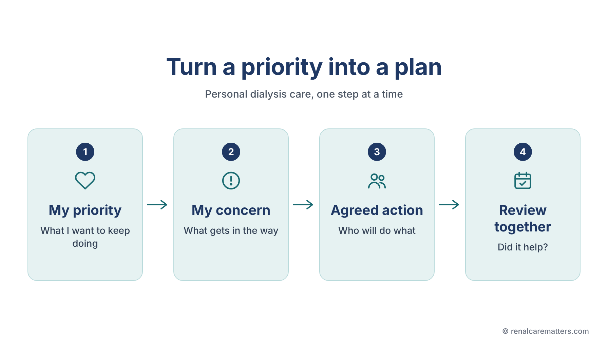
A useful plan links four things: what you want to keep doing, what gets in the way, who will do what, and a date to check whether it helped.Ang mabuting plano ay nag-uugnay ng apat na bagay: ang gusto ninyong patuloy na magawa, ang humahadlang, sino ang gagawa ng ano, at petsa para suriin kung nakatulong ito.Ang maayong plano nagdugtong sa upat ka butang: ang gusto nimong padayon nga mahimo, ang nakababag, kinsa ang mobuhat sa unsa, ug petsa aron susihon kon nakatabang ba.Ing mayap a plano pisasabat na ing apat a bage: ing buri mung patuloy a gawan, ing makasangkal, ninu ing gawa ning nanu, at petsa para surian nung meyaliwa.
© renalcarematters.comWhat is the first goal you want your team to understand — written as something they could check?Ano ang unang layunin na gusto ninyong maunawaan ng inyong team — nakasulat bilang isang bagay na kaya nilang suriin?Unsa ang unang tumong nga gusto nimong masabtan sa imong team — gisulat isip usa ka butang nga masusi nila?Nanu ing mumunang panugali a buri mung maintindian ning team yu — nakasulat bilang metung a bage a kayang da surian?
Tell your team when, not just whatSabihin sa team kailan, hindi lang anoSultihi ang team kanus-a, dili lang unsaSabian me ing team kapilan, e mu nanu
The timing of a symptom is a clue to its cause. Cramps near the end of treatment, dizziness when you stand up after dialysis, or exhaustion lasting into the next day often point toward how fast fluid was removed or how your heart and blood vessels respond. Itching at night, poor sleep, or low mood that is the same on dialysis and non-dialysis days points elsewhere. When you report a symptom, try to describe: what happened, when it started, whether it was before, during, or after dialysis, what it stopped you from doing, and whom you told.Ang oras ng sintomas ay palatandaan ng sanhi nito. Ang pulikat malapit sa katapusan ng gamutan, pagkahilo pagtayo pagkatapos ng dialysis, o pagod na tumatagal hanggang kinabukasan ay madalas tumuturo sa bilis ng pag-alis ng likido o sa tugon ng puso at mga ugat. Ang pangangati sa gabi, hirap matulog, o kalungkutan na pareho sa araw ng dialysis at hindi ay tumuturo sa ibang sanhi. Kapag nag-uulat ng sintomas, ilarawan: ano ang nangyari, kailan nagsimula, kung bago, habang, o pagkatapos ng dialysis, ano ang hindi ninyo nagawa dahil dito, at kanino ninyo sinabi.Ang oras sa sintomas usa ka timailhan sa hinungdan niini. Ang kulumbo duol sa katapusan sa pagtambal, pagkalipong sa pagbarog human sa dialysis, o kakapoy nga molungtad hangtod sa sunod adlaw kasagaran nagtudlo sa kapaspas sa pagkuha sa tubig o sa tubag sa kasingkasing ug mga ugat. Ang katol sa gabii, lisod makatulog, o kaguol nga parehas sa adlaw sa dialysis ug dili, nagtudlo sa laing hinungdan. Kon magreport og sintomas, isulti: unsa ang nahitabo, kanus-a nagsugod, kon sa wala pa, samtang, o human sa dialysis, unsa ang wala nimo mahimo tungod niini, ug kang kinsa nimo gisulti.Ing oras ning sintomas, metung yang tanda ning sangkan na. Ing pulikat malapit king pangatapus ning panulu, pamanlisan king pamanalikdo kaibat ning dialysis, o kapaguran anggang bukas, dakal a beses tuturu king kabilis ning pamanalan king danum o king tugun ning pusu at ugat. Ing kati king bengi, marapat matudtud, o lungkut a pareu king aldo ning dialysis at ali, tuturu king aliwang sangkan. Nung magreport kang sintomas, ilarawan me: nanu ing milyari, kapilan mepamuntu, nung bayu, kabang, o kaibat ning dialysis, nanu ing e mu agawa uli na, at ninu ing sinabian mu.
| WhenKailanKanus-aKapilan | What your team checksAno ang sinusuri ng teamUnsay susihon sa teamNanu ing surian ning team | What you can reportAno ang maaari ninyong iulatUnsay mahimo nimong ireportNanu ing maliari yung ireport |
|---|---|---|
| Before dialysisBago ang dialysisSa wala pa ang dialysisBayu ing dialysis | Weight gained since last session, blood pressure, breathing, swellingTimbang na nadagdag mula sa huling sesyon, presyon ng dugo, paghinga, pamamagaTimbang nga nadugang sukad sa miaging sesyon, presyon sa dugo, pagginhawa, panghubagTimbang a medagdag manibat king milabas a sesyon, presyon ning daya, pamanawa, pamamaga | How much urine you still pass, how you slept and ate, missed medicinesGaano karami pa ang inyong ihi, kumusta ang tulog at kain, nalaktawang gamotPila pa ang imong ihi, kumusta ang katulog ug kaon, nalaktawang tambalPilan pa ing imi yu, kumusta ing tudtud at pamangan, melaktawang gamut |
| During dialysisHabang nagda-dialysisSamtang nag-dialysisKabang magdialysis | Blood pressure, fluid-removal rate, how the machine and access are workingPresyon ng dugo, bilis ng pag-alis ng likido, takbo ng makina at accessPresyon sa dugo, kapaspas sa pagkuha sa tubig, dagan sa makina ug accessPresyon ning daya, kabilis ning pamanalan danum, takbu ning makina at access | Cramps, dizziness, nausea, chest discomfort — tell the nurse right awayPulikat, pagkahilo, pagduduwal, hirap sa dibdib — sabihin agad sa narsKulumbo, kalipong, kasukaon, dili maayo sa dughan — sultihi dayon ang narsPulikat, pamanlisan, pamagsuka, e mayap king salu — sabian ye agad ing nars |
| After dialysisPagkatapos ng dialysisHuman sa dialysisKaibat ning dialysis | Weight reached, blood pressure on standing, access bleeding stoppedNaabot na timbang, presyon ng dugo pagtayo, tumigil na pagdurugo ng accessNaabot nga timbang, presyon sa dugo sa pagbarog, mihunong nga pagdugo sa accessMeabut a timbang, presyon ning daya king pamanalikdo, mipigil a pamagdaya king access | How long you take to recover, dizziness at home, sleep, appetiteGaano katagal bago makabawi, pagkahilo sa bahay, tulog, gana sa pagkainUnsa kadugay ka makabawi, kalipong sa balay, katulog, gana sa pagkaonNanung kabaluga bayu makabawi, pamanlisan king bale, tudtud, gana king pamangan |
Add one more question that takes ten seconds: "How long does it take you to recover after a session?" In a large international study, people who needed more than 12 hours to recover had worse quality of life and more hospital stays than those who recovered within a few hours. That link does not prove that recovery time causes problems, but it is a simple signal that your plan deserves a closer look.Magdagdag ng isa pang tanong na sampung segundo lang: "Gaano katagal bago kayo makabawi pagkatapos ng sesyon?" Sa isang malaking pandaigdigang pag-aaral, ang mga nangailangan ng higit 12 oras para makabawi ay may mas mababang kalidad ng buhay at mas maraming pagkaospital kaysa sa mga nakabawi sa loob ng ilang oras. Hindi nito pinapatunayan na ang tagal ng pagbawi ang sanhi ng problema, ngunit isa itong simpleng senyales na dapat suriing mabuti ang inyong plano.Pagdugang og usa pa ka pangutana nga napulo ka segundo lang: "Unsa kadugay ka makabawi human sa sesyon?" Sa usa ka dako nga internasyonal nga pagtuon, ang mga nanginahanglan og labaw sa 12 ka oras aron makabawi adunay mas ubos nga kalidad sa kinabuhi ug mas daghang pagka-ospital kaysa sa mga nakabawi sulod sa pipila ka oras. Wala kini nagpamatuod nga ang gidugayon sa pagbawi ang hinungdan sa problema, apan usa kini ka yano nga senyales nga angay susihon pag-ayo ang imong plano.Dagdagan me ning metung pang kutang a apulung segundu mu: "Nanung kabaluga bayu ka makabawi kaibat ning sesyon?" King metung a maragul a pag-aral king sangalibutan, deng mangailangan mas mabaluga king 12 oras bayu makabawi, mas mababa ing kalidad ning bie ra at mas dakal ing pamanospital kesa king makabawi king lalam ning pilan a oras. E na papatunayan a ing kabaluga ning pamagbawi ing sangkan ning problema, oneng metung yang simpling tanda a dapat surian mayap ing plano yu.
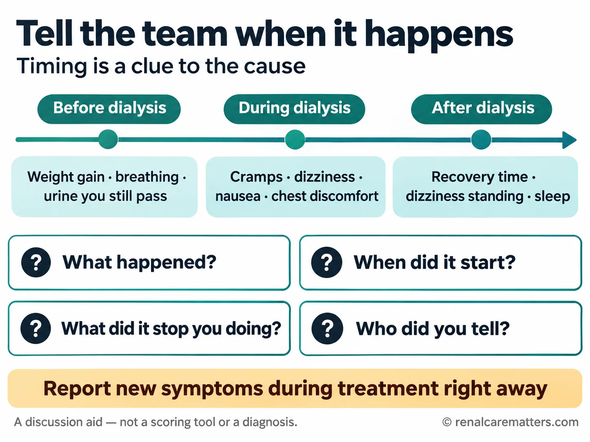
Timing and impact help your team connect a symptom to its cause. This card is a discussion aid, not a scoring tool or a diagnosis.Ang oras at epekto ay tumutulong sa team na iugnay ang sintomas sa sanhi nito. Ang kard na ito ay gabay sa usapan, hindi panukat o diyagnosis.Ang oras ug epekto motabang sa team sa pagdugtong sa sintomas ngadto sa hinungdan. Kini nga kard giya sa panag-istorya, dili sukdanan o diyagnosis.Ing oras at epektu saup da king team para isabat ing sintomas king sangkan na. Ing kard a iti gabay king pamisabi, e panukat o diyagnosis.
© renalcarematters.comReport new symptoms during treatment right awayIulat agad ang bagong sintomas habang nagda-dialysisIreport dayon ang bag-ong sintomas samtang nag-dialysisIreport yu agad ing bayung sintomas kabang magdialysis
A diary is for patterns over weeks. Chest pain, trouble breathing, feeling faint, a cramp that will not ease, or bleeding from your access must be told to the nurse at the chair immediately — not saved for your next review.Ang talaarawan ay para sa mga pattern sa loob ng ilang linggo. Ang pananakit ng dibdib, hirap huminga, pakiramdam na mahihimatay, pulikat na hindi nawawala, o pagdurugo sa inyong access ay dapat sabihin agad sa nars sa tabi ninyo — hindi itatabi para sa susunod na pagsusuri.Ang talaadlawan para sa mga sumbanan sulod sa pipila ka semana. Ang sakit sa dughan, lisod ginhawa, pagbati nga hapit mangaluya, kulumbo nga dili mohupay, o pagdugo sa imong access kinahanglang isulti dayon sa nars sa imong kiliran — dili tipigan alang sa sunod nga pagsusi.Ing talaaldo para king pattern king lalam ning pilan a dominggu. Ing sakit king salu, marapat a manawa, pamakiramdam a malipungan, pulikat a e mawala, o pamagdaya king access yu, sabian yu agad king nars king siping yu — e itagu para king susunod a pamanyuri.
What detail about timing would help your team connect your main symptom to your treatment?Anong detalye tungkol sa oras ang makatutulong sa team na iugnay ang pangunahing sintomas ninyo sa gamutan?Unsang detalye bahin sa oras ang makatabang sa team sa pagdugtong sa imong nag-unang sintomas sa pagtambal?Nanung detalye tungkul king oras ing makasaup king team para isabat ing pangunang sintomas yu king panulu?
Know which parts of your plan can be reviewedAlamin kung aling bahagi ng plano ang maaaring suriinHibaloi kon unsang bahin sa plano ang mahimong susihonBalu yu nung nanung bahagi ning plano ing maliaring surian
Your dialysis prescription has several parts your team can adjust: how long each session lasts, how much fluid is removed, your target (dry) weight, the dialysis fluid (dialysate), your medicines, and your schedule. Time matters for a physical reason. If the same amount of fluid has to come out in three hours instead of four, it must come out about one-third faster — and faster removal gives your tissues less time to refill your blood. That is why your team thinks about time, weight gain between sessions, and target weight together.Ang inyong reseta sa dialysis ay may ilang bahaging maaaring baguhin ng team: gaano katagal ang bawat sesyon, gaano karaming likido ang aalisin, ang target (dry) weight, ang likido ng dialysis (dialysate), ang mga gamot, at ang iskedyul. Mahalaga ang oras dahil sa pisikal na dahilan. Kung ang parehong dami ng likido ay kailangang alisin sa tatlong oras sa halip na apat, kailangan itong alisin nang mga isang-katlo na mas mabilis — at ang mas mabilis na pag-alis ay nagbibigay sa mga tisyu ng mas kaunting oras para punuin muli ang dugo. Kaya iniisip ng team ang oras, dagdag-timbang sa pagitan ng sesyon, at target weight nang sabay-sabay.Ang imong reseta sa dialysis adunay pipila ka bahin nga mausab sa team: unsa kadugay ang matag sesyon, pila ka tubig ang kuhaon, ang target (dry) weight, ang likido sa dialysis (dialysate), ang mga tambal, ug ang iskedyul. Importante ang oras tungod sa pisikal nga hinungdan. Kon ang parehas nga gidaghanon sa tubig kinahanglang kuhaon sulod sa tulo ka oras imbes upat, kinahanglan kining kuhaon nga mga usa-sa-tulo nga mas paspas — ug ang mas paspas nga pagkuha naghatag sa mga tisyu og mas gamay nga oras sa pagpuno pag-usab sa dugo. Mao nga gihunahuna sa team ang oras, dugang timbang tali sa mga sesyon, ug target weight nga dungan.Ing reseta yu king dialysis atin yang pilan a bahagi a kayang baguan ning team: nanung kabaluga ing balang sesyon, pilan a danum ing ilalan, ing target (dry) weight, ing danum ning dialysis (dialysate), deng gamut, at ing iskedyul. Mayalaga ing oras uli ning pisikal a sangkan. Nung ing pareung dami ning danum kailangan alan king atlung oras kesa king apat, kailangan yang alan a mas mabilis ing metung-king-atlu — at ing mas mabilis a pamanalan, mas kulang ing oras a ibie na king tisyu para punan pasibayu ing daya. Ya ini kabang isipan ning team ing oras, ing dagdag timbang king pagitan ning sesyon, at ing target weight samasama.
If you still pass urine, that is precious. Your own kidneys keep clearing waste and water every hour of every day — something dialysis does only a few hours a week. Removing fluid too aggressively can speed up the loss of that remaining function. In a large United Kingdom trial, careful, regular fluid checks by the team preserved remaining kidney function well, and people who kept more of it lived longer. Tell your team roughly how much urine you pass each day, and ask how your plan protects it.Kung nakaiihi pa kayo, mahalaga iyon. Patuloy na naglilinis ng dumi at tubig ang sarili ninyong bato bawat oras ng bawat araw — bagay na ginagawa lamang ng dialysis nang ilang oras sa isang linggo. Ang sobrang agresibong pag-alis ng likido ay maaaring magpabilis ng pagkawala ng natitirang tungkuling iyon. Sa isang malaking pag-aaral sa United Kingdom, napanatili nang maayos ang natitirang tungkulin ng bato sa pamamagitan ng maingat at regular na pagsusuri ng likido ng team, at mas matagal nabuhay ang mga nakapagpanatili nito. Sabihin sa team kung gaano karami ang inyong ihi bawat araw, at itanong kung paano ito pinoprotektahan ng plano.Kon makaihi ka pa, bililhon kana. Padayon nga naglimpyo sa hugaw ug tubig ang imong kaugalingong kidney matag oras sa matag adlaw — butang nga gihimo lang sa dialysis sulod sa pipila ka oras sa usa ka semana. Ang sobra ka agresibo nga pagkuha sa tubig mahimong mopaspas sa pagkawala niining nahabilin nga buluhaton. Sa usa ka dako nga pagtuon sa United Kingdom, napreserbar pag-ayo ang nahabilin nga buluhaton sa kidney pinaagi sa mainampingon ug regular nga pagsusi sa tubig sa team, ug mas dugay nabuhi ang mga nakapabilin niini. Sultihi ang team kon pila ang imong ihi matag adlaw, ug pangutan-a kon giunsa kini pagpanalipod sa plano.Nung makaimi ka pa, mahalaga ita. Patuloy a manlinis dumi at danum ing sarili yung batu balang oras ning balang aldo — bage a gagawan ning dialysis pilan mu a oras king metung a dominggu. Ing masyadung agresibung pamanalan danum maliari yang pabilisan ing pamawala ning matagang obra na. King metung a maragul a pag-aral king United Kingdom, mepanatili ya mayap ing matagang obra ning batu king maingat at regular a pamanyuri king danum ning team, at mas mabaluga la bie reng mekapanatili kaniti. Sabian ye ing team nung pilan ing imi yu balang aldo, at kutnan yu nung makananu neng pruteksyunan ning plano.
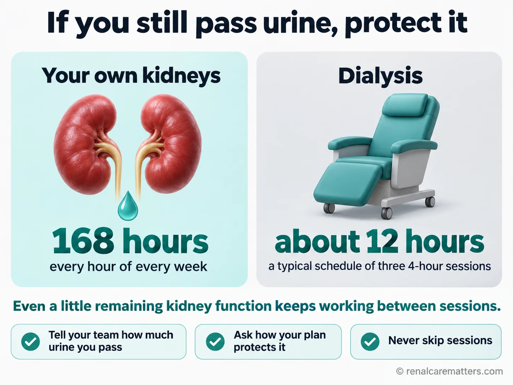
Remaining kidney function works every hour of the week. Illustrative schedule: three 4-hour sessions. Tell your team how much urine you still pass.Gumagana ang natitirang kidney function sa bawat oras ng linggo. Halimbawang iskedyul: tatlong sesyon na tig-4 na oras. Sabihin sa inyong team kung gaano karami pa ang inyong naiihi.Ang nahibilin nga kidney function nagtrabaho matag oras sa semana. Pananglitan nga iskedyul: tulo ka sesyon nga tag-4 ka oras. Sultihi ang imong team kon pila pa ang imong ihi.Ing kekatang kidney function gagana ya balang oras king lingu. Alimbawang iskedyul: atlung sesyon a tig-4 oras. Sabian me ing team yu nung nanu kadakal pa ing ume mu.
© renalcarematters.com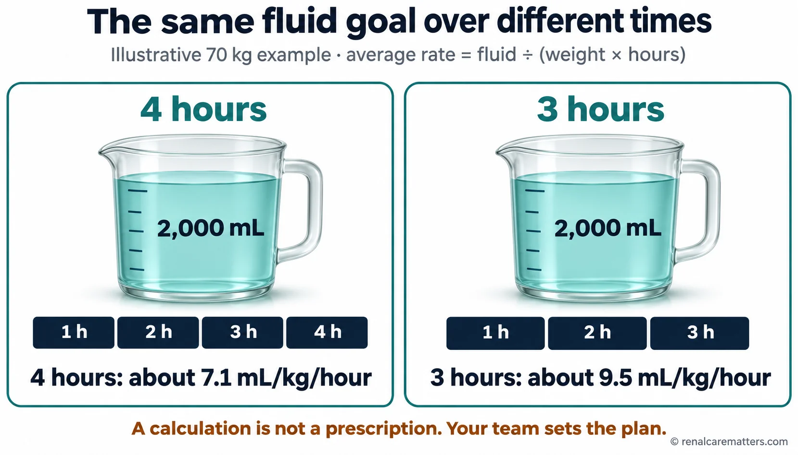
Same fluid goal, fewer hours, faster removal. This illustrative example is not a prescription and does not show a safe or unsafe rate — your team sets your plan.Parehong layunin sa likido, mas kaunting oras, mas mabilis na pag-alis. Halimbawa lamang ito, hindi reseta, at hindi nagpapakita ng ligtas o hindi ligtas na bilis — ang team ang nagtatakda ng plano ninyo.Parehas nga tumong sa tubig, mas gamay nga oras, mas paspas nga pagkuha. Pananglitan lang kini, dili reseta, ug wala nagpakita og luwas o dili luwas nga kapaspas — ang team ang mohimo sa imong plano.Pareung panugali king danum, mas kulang a oras, mas mabilis a pamanalan. Alimbawa mu ini, e reseta, at e na ipapakit ing ligtas o e ligtas a kabilis — ing team ing magtakda king plano yu.
- mL
- milliliters
- kg
- kilograms
| My concernAng aking alalahaninAkong kabalakaIng kapagalu ku | What to askAno ang itatanongUnsay pangutan-onNanu ing kutnan | Who can helpSino ang makatutulongKinsay makatabangNinu ing makasaup |
|---|---|---|
| I am too tired after dialysis to care for my family.Sobrang pagod ako pagkatapos ng dialysis para alagaan ang pamilya.Kapoy kaayo ko human sa dialysis aron maatiman ang akong pamilya.Pagal ku masyadu kaibat ning dialysis para alagan ing pamilya ku. | Can we review my fluid removal, session time, and other causes of tiredness?Maaari ba nating suriin ang pag-alis ng likido, oras ng sesyon, at ibang sanhi ng pagod?Mahimo ba natong susihon ang pagkuha sa tubig, oras sa sesyon, ug ubang hinungdan sa kakapoy?Maliari ta tang surian ing pamanalan king danum, oras ning sesyon, at aliwang sangkan ning kapaguran? | Your nephrologist and dialysis nurseAng inyong nephrologist at dialysis nurseImong nephrologist ug dialysis nurseIng nephrologist yu at dialysis nurse |
| My ride often fails, and I miss sessions.Madalas pumalya ang sasakyan ko kaya lumalampas ako ng sesyon.Kanunay mapakyas akong sakyanan mao nga makalimtan nako ang sesyon.Dakal a beses e ku makasake kaya alang sesyon ku. | Is there another shift or transport option that could work?May ibang shift o paraan ng transportasyon ba na maaaring gumana?Aduna bay laing shift o paagi sa transportasyon nga mahimo?Atin pang aliwang shift o paralan king pamaglakbe a maliaring makasaup? | Unit coordinator or social workerCoordinator ng unit o social workerCoordinator sa unit o social workerCoordinator ning unit o social worker |
| My hospital discharge medicines differ from my dialysis list.Iba ang mga gamot ko mula sa ospital sa listahan ng dialysis.Lahi ang akong tambal gikan sa ospital sa lista sa dialysis.Aliwa ing gamut ku manibat ospital king listahan king dialysis. | Can we reconcile the list today and agree which one I follow?Maaari ba nating itugma ang listahan ngayon at pagkasunduan kung alin ang susundin?Mahimo ba natong itugma ang lista karon ug magkasabot kon asa ang sundon?Maliari tang itugma ing listahan ngeni at pagkasundwan nung nanu ing tutukyan ku? | Nephrologist, pharmacist, or dialysis nurseNephrologist, parmasyutiko, o dialysis nurseNephrologist, parmasyutiko, o dialysis nurseNephrologist, parmasyutiku, o dialysis nurse |
Never shorten a session or change medicines on your ownHuwag kailanman paikliin ang sesyon o baguhin ang gamot nang mag-isaAyaw gyud paubsi ang sesyon o usba ang tambal nga ikaw raE yu kailanman paikliyan ing sesyon o baguan ing gamut nang sarili yu
Personalization means a plan you understand and agree with — not machine settings to test at home. Cutting a session short leaves fluid and potassium behind; skipping blood pressure medicine or a binder to "see what happens" can be dangerous. Bring the idea to your team instead.Ang personal na pangangalaga ay nangangahulugang planong nauunawaan at sinasang-ayunan ninyo — hindi mga setting ng makina na susubukan sa bahay. Ang pagpapaikli ng sesyon ay nag-iiwan ng likido at potassium; ang paglaktaw sa gamot sa presyon o binder para "tingnan ang mangyayari" ay maaaring mapanganib. Dalhin ang ideya sa inyong team.Ang personal nga pag-atiman nagpasabot og plano nga imong nasabtan ug giuyonan — dili mga setting sa makina nga sulayan sa balay. Ang pagpaubos sa sesyon magbilin og tubig ug potassium; ang paglaktaw sa tambal sa presyon o binder aron "tan-awon unsay mahitabo" mahimong peligroso. Dad-a ang ideya sa imong team.Ing personal a pamanalaga, plano yang maintindian at sasang-ayunan yu — e setting ning makina a subukan king bale. Ing pamaikli king sesyon, mamiwala yang danum at potassium; ing pamaglaktaw king gamut king presyon o binder para "lawan nung nanu ing malyari" maliari yang mapanganib. Darun yu ing idea king team yu.
Which of your concerns can you describe yourself, and which change needs your team's approval?Aling alalahanin ang kaya ninyong ilarawan, at aling pagbabago ang kailangan ng pahintulot ng team?Unsang kabalaka ang mahimo nimong ihulagway, ug unsang kausaban ang nanginahanglan og pagtugot sa team?Nanung kapagalu ing kaya yung ilarawan, at nanung pamagbayu ing kailangan ning pahintulot ning team?
Your treatment options can be revisitedMaaaring balikan ang inyong mga opsyon sa gamutanMahimong balikon ang imong mga kapilian sa pagtambalMaliari yung balikan deng opsyon yu king panulu
In-center hemodialysis (HD), peritoneal dialysis (PD) done at home through the belly, home hemodialysis, kidney transplant evaluation, and conservative kidney management (active care without dialysis) each need different medical checks and different kinds of support at home. Supportive care — help with symptoms, mood, and planning ahead — can be part of your care while you continue dialysis. Many people start dialysis in an emergency, with no time to choose. That first start does not have to be your last conversation about options.Ang in-center hemodialysis (HD), peritoneal dialysis (PD) na ginagawa sa bahay sa pamamagitan ng tiyan, home hemodialysis, pagsusuri para sa kidney transplant, at conservative kidney management (aktibong pangangalaga nang walang dialysis) ay nangangailangan ng iba't ibang pagsusuri at suporta sa bahay. Ang supportive care — tulong sa sintomas, damdamin, at pagpaplano — ay maaaring bahagi ng pangangalaga habang nagpapatuloy ang dialysis. Maraming tao ang nagsimula ng dialysis sa emerhensiya, nang walang oras pumili. Hindi kailangang iyon na ang huling usapan tungkol sa mga opsyon.Ang in-center hemodialysis (HD), peritoneal dialysis (PD) nga himoon sa balay pinaagi sa tiyan, home hemodialysis, pagsusi alang sa kidney transplant, ug conservative kidney management (aktibong pag-atiman nga walay dialysis) nanginahanglan og lain-laing pagsusi ug suporta sa balay. Ang supportive care — tabang sa sintomas, pamati, ug pagplano — mahimong bahin sa pag-atiman samtang nagpadayon ang dialysis. Daghang tawo ang nagsugod og dialysis sa emerhensya, walay panahon sa pagpili. Dili kinahanglan nga kadto na ang katapusang panag-istorya bahin sa mga kapilian.Ing in-center hemodialysis (HD), peritoneal dialysis (PD) a gagawan king bale king atiyan, home hemodialysis, pamanyuri para king kidney transplant, at conservative kidney management (aktibung pamanalaga a ala dialysis) kailangan da reng aliwa-aliwang pamanyuri at saup king bale. Ing supportive care — saup king sintomas, pamakiramdam, at pamaplanu — maliari yang bahagi ning pamanalaga kabang patuloy ing dialysis. Dakal a tau ing mepamuntu dialysis king emerhensya, ala nang panaun mamili. E kailangan ayta na ing tauling pamisabi tungkul king opsyon.
Not every option is available in every Philippine unit, and home hemodialysis remains difficult to run locally. Ask three questions: Which options am I medically suitable for? What training, space, support, and daily work would each need? Can we talk again if my health or family situation changes?Hindi lahat ng opsyon ay mayroon sa bawat unit sa Pilipinas, at mahirap pa ring isagawa dito ang home hemodialysis. Magtanong ng tatlo: Aling opsyon ang angkop sa akin medikal? Anong pagsasanay, espasyo, suporta, at araw-araw na gawain ang kailangan ng bawat isa? Maaari ba tayong mag-usap muli kung magbago ang aking kalusugan o sitwasyon ng pamilya?Dili tanang kapilian anaa sa matag unit sa Pilipinas, ug lisod pa gihapon ipadagan dinhi ang home hemodialysis. Pangutana og tulo: Unsang kapilian ang haom kanako sa medikal? Unsang pagbansay, luna, suporta, ug adlaw-adlaw nga buluhaton ang kinahanglan sa matag usa? Mahimo ba kitang mag-istorya pag-usab kon mausab akong panglawas o sitwasyon sa pamilya?E sablang opsyon atiu king balang unit king Pilipinas, at marapat pa murin ipalakad keni ing home hemodialysis. Kutang kayung atlu: Nanung opsyon ing angkop kanaku king medikal? Nanung pamagsanay, lugal, saup, at aldo-aldong obra ing kailangan ning balang metung? Maliari ta tang mamisabi pasibayu nung magbayu ing kalusugan ku o ing sitwasyon ning pamilya?
Which option would you like more information about, and what would you need to know before deciding?Aling opsyon ang gusto ninyong malaman pa, at ano ang kailangan ninyong malaman bago magpasya?Unsang kapilian ang gusto nimong mahibaloan pa, ug unsa ang kinahanglan nimong mahibaloan sa dili pa mohukom?Nanung opsyon ing buri yung balu pa, at nanu ing kailangan yung balu bayu magdesisyun?
Your access, your medicines, and hospital staysAng inyong access, mga gamot, at pagkaospitalImong access, mga tambal, ug pagka-ospitalIng access yu, deng gamut, at pamanospital
Your access — a fistula, graft, or catheter — is the doorway dialysis uses to reach your blood. Ask why your current access fits your plan, and what would happen if your plan changes, for example if you later move to peritoneal dialysis or a transplant. Planning your access around your whole future, not just the next session, is what kidney specialists call a Life-Plan.Ang inyong access — fistula, graft, o catheter — ay ang pinto na ginagamit ng dialysis para maabot ang inyong dugo. Itanong kung bakit angkop ang kasalukuyang access sa inyong plano, at ano ang mangyayari kung magbago ang plano, halimbawa kung lilipat sa peritoneal dialysis o transplant. Ang pagpaplano ng access para sa buong hinaharap, hindi lang sa susunod na sesyon, ay tinatawag ng mga espesyalista na Life-Plan.Ang imong access — fistula, graft, o catheter — mao ang pultahan nga gigamit sa dialysis aron maabot ang imong dugo. Pangutan-a kon nganong haom ang imong access karon sa imong plano, ug unsay mahitabo kon mausab ang plano, pananglitan kon mobalhin sa peritoneal dialysis o transplant. Ang pagplano sa access alang sa tibuok umaabot, dili lang sa sunod nga sesyon, gitawag sa mga espesyalista nga Life-Plan.Ing access yu — fistula, graft, o catheter — ya ing pasbul a gamitan ning dialysis para abutan ing daya yu. Kutnan yu nung bakit angkop ing access yu ngeni king plano yu, at nanu ing malyari nung magbayu ing plano, alimbawa nung lumipat kayu king peritoneal dialysis o transplant. Ing pamaplanu king access para king kabilang darating, e mu king susunod a sesyon, ausan da reng espesyalista bilang Life-Plan.
Keep a short, dated summary with you: your dialysis center's phone number, your type of dialysis and schedule, your access type, allergies, and an up-to-date medicine list. After any hospital stay, bring it to your next session and ask your team to settle any instructions that disagree. Our personal medical journal guide shows one simple way to keep it.Magdala ng maikli at may petsang buod: numero ng dialysis center, uri ng dialysis at iskedyul, uri ng access, mga allergy, at updated na listahan ng gamot. Pagkatapos ng anumang pagkaospital, dalhin ito sa susunod na sesyon at hilingin sa team na ayusin ang mga tagubiling hindi nagtutugma. Ang aming gabay sa personal na medical journal ay nagpapakita ng simpleng paraan.Pagdala og mubo ug may petsa nga katingbanan: numero sa dialysis center, klase sa dialysis ug iskedyul, klase sa access, mga alerdyi, ug updated nga lista sa tambal. Human sa bisan unsang pagka-ospital, dad-a kini sa sunod nga sesyon ug hangyoa ang team nga husayon ang mga instruksyon nga dili magkatugma. Ang among giya sa personal nga medical journal nagpakita og yano nga paagi.Magdala kayung maikli at atin petsang buod: numeru ning dialysis center, klase ning dialysis at iskedyul, klase ning access, allergy, at updated a listahan ning gamut. Kaibat ning nanumang pamanospital, darun yu ini king susunod a sesyon at aldawan ye ing team a ayusan deng tagubilin a e misasabat. Ing kekaming gabay king personal a medical journal ipakit na ing simpling paralan.
Who updates your medicine list when hospital and dialysis instructions differ?Sino ang nag-a-update ng listahan ng gamot kapag magkaiba ang tagubilin ng ospital at dialysis?Kinsa ang mo-update sa lista sa tambal kon lahi ang instruksyon sa ospital ug dialysis?Ninu ing mag-update king listahan ning gamut nung aliwa ing tagubilin ning ospital at dialysis?
When daily life makes the plan hard to followKapag pinahihirapan ng araw-araw na buhay ang pagsunod sa planoKon ang adlaw-adlaw nga kinabuhi nakapalisod sa pagsunod sa planoNung pirapatan ning aldo-aldong bie ing pamanyukyab king plano
Travel time, costs, lost work, food that is hard to afford, language, physical access to the unit, and the strain on the family member who helps you are all part of your care. They are not personal failures. Tell your team which barrier is most likely to make you miss or shorten a treatment, and decide together who will do what. For example: "Transport keeps failing" → the unit coordinator checks other shifts or transport options and tells you what they found by an agreed date. Ask about your PhilHealth (Philippine Health Insurance Corporation) dialysis benefits using our PhilHealth guide, and share our caregiver guide with whoever helps you at home — with your permission.Ang oras ng biyahe, gastos, nawalang trabaho, pagkaing mahirap bilhin, wika, pisikal na pagpunta sa unit, at ang pagod ng kapamilyang tumutulong sa inyo ay bahagi ng inyong pangangalaga. Hindi ito personal na pagkukulang. Sabihin sa team kung aling hadlang ang pinakamalamang na magpalampas o magpaikli ng gamutan, at magpasya nang magkasama kung sino ang gagawa ng ano. Halimbawa: "Laging pumapalya ang transportasyon" → titingnan ng coordinator ang ibang shift o paraan ng biyahe at sasabihin sa inyo sa napagkasunduang petsa. Alamin ang inyong PhilHealth dialysis benefits sa aming gabay sa PhilHealth, at ibahagi ang aming gabay para sa tagapag-alaga sa tumutulong sa inyo — nang may pahintulot ninyo.Ang oras sa biyahe, gasto, nawala nga trabaho, pagkaon nga lisod paliton, pinulongan, pisikal nga pag-adto sa unit, ug ang kakapoy sa kapamilya nga motabang kanimo bahin tanan sa imong pag-atiman. Dili kini personal nga kapakyasan. Sultihi ang team kon asang babag ang labing lagmit makapalaktaw o makapamubo sa pagtambal, ug magdesisyon nga magkauban kon kinsa ang mobuhat sa unsa. Pananglitan: "Kanunay mapakyas ang transportasyon" → susihon sa coordinator ang ubang shift o paagi sa biyahe ug isulti kanimo sa gikasabotang petsa. Hibaloi ang imong PhilHealth dialysis benefits sa among giya sa PhilHealth, ug ipaambit ang among giya alang sa tig-atiman sa motabang kanimo — uban sa imong pagtugot.Ing oras ning biyahe, gastus, mewalang obra, pamangan a marapat sabian, amanu, pamamuntang unit, at ing kapaguran ning kapamilyang saup keka, bahagi la ngan ning pamanalaga yu. E la ini personal a kakulangan. Sabian ye ing team nung nanung sangkal ing pekamaliaring pamalaktaw o pamaikli king panulu, at magdesisyun kayung samasama nung ninu ing gawa ning nanu. Alimbawa: "Pirmi yang pumalya ing sasakyan" → lawan ning coordinator ing aliwang shift o paralan king biyahe at sabian na keka king pikasundwan a petsa. Balu yu ing PhilHealth dialysis benefits yu king kekaming gabay king PhilHealth, at ibahagi yu ing kekaming gabay para king tagapag-alaga king saup keka — kayabe ing pahintulot yu.
Which barrier is most likely to interrupt your treatment, and who will act on it?Aling hadlang ang pinakamalamang na makaabala sa gamutan, at sino ang kikilos dito?Asang babag ang labing lagmit makabalda sa pagtambal, ug kinsa ang molihok niini?Nanung sangkal ing pekamaliaring makaabala king panulu, at ninu ing kumilos kaniti?
What "personalized" can — and cannot — promiseAng kaya — at hindi kaya — ipangako ng "personalized"Unsay masaad — ug dili masaad — sa "personalized"Nanu ing kaya — at e kaya — ipangaku ning "personalized"
It is natural to think that a plan tailored to you must be better. Sometimes it is; sometimes it only sounds better. When researchers set the dialysis fluid slightly cooler than each patient's own body temperature in dozens of Canadian units, heart problems and deaths did not fall, and more people felt uncomfortably cold. When units tried longer default sessions, too few patients actually received longer treatment to answer the question. On the other hand, one newer method that filters larger waste molecules, called hemodiafiltration, lowered the risk of death in a large European trial among patients who could receive it — but it is not yet widely available here.Natural na isiping mas mabuti ang planong iniangkop sa inyo. Minsan totoo; minsan mas maganda lang pakinggan. Nang gawing bahagyang mas malamig ang likido ng dialysis kaysa sa temperatura ng katawan ng bawat pasyente sa dose-dosenang unit sa Canada, hindi bumaba ang problema sa puso at kamatayan, at mas maraming tao ang nakaramdam ng labis na lamig. Nang subukan ng mga unit ang mas mahabang sesyon, kakaunti ang aktuwal na nakatanggap nito para masagot ang tanong. Sa kabilang banda, isang mas bagong paraan na nagsasala ng mas malalaking dumi, ang hemodiafiltration, ay nagpababa ng panganib ng kamatayan sa isang malaking pag-aaral sa Europa sa mga pasyenteng kayang tumanggap nito — ngunit hindi pa ito laganap dito.Natural nga hunahunaon nga mas maayo ang plano nga gi-angay kanimo. Usahay tinuod; usahay mas nindot lang paminawon. Sa dihang gihimong gamay nga mas bugnaw ang likido sa dialysis kaysa sa temperatura sa lawas sa matag pasyente sa daghang unit sa Canada, wala mokunhod ang problema sa kasingkasing ug kamatayon, ug mas daghang tawo ang nakabati og sobrang katugnaw. Sa dihang gisulayan sa mga unit ang mas taas nga sesyon, gamay ra ang tinuod nga nakadawat niini aron matubag ang pangutana. Sa laing bahin, usa ka mas bag-ong pamaagi nga nagsala sa mas dagkong hugaw, ang hemodiafiltration, nakapaubos sa peligro sa kamatayon sa usa ka dakong pagtuon sa Europe sa mga pasyente nga makadawat niini — apan dili pa kini kaylap dinhi.Natural a isipan a mas mayap ing plano a mekayabe keka. Kapilan totu; kapilan mas mayap mu pakiramdaman. Kanitang gewa dang mas malamig ing danum ning dialysis kesa king temperatura ning katawan ning balang pasyente king dakal a unit king Canada, e mebababa ing problema king pusu at kamatayan, at mas dakal a tau ing mekaramdam lamig. Kanitang sinubukan da ring unit ing mas mabalugang sesyon, kakaunti ing talagang mekatanggap kaniti para masagut ing kutang. King aliwang bahagi, metung a mas bayung paralan a manyala king mas maragul a dumi, ing hemodiafiltration, pebababa ne ing panganib ning kamatayan king metung a maragul a pag-aral king Europa kareng pasyente a kaya dang tanggapan — oneng e pa ini laganap keni.
Several tools aim to measure your body more precisely. A small device that estimates body water (bioimpedance) was tested in the United Kingdom trial above: it did not protect kidney function better than careful standard checks, so the careful checking is what matters. Starting with two sessions a week for people who still pass plenty of urine is being tested in a large trial. Computer programs that suggest anemia medicine doses have been linked to fewer hospital stays in large clinic networks, but not to longer life. None of these replace a team that listens to you.Ilang kagamitan ang naglalayong sukatin nang mas tiyak ang inyong katawan. Isang maliit na aparatong tumatantiya ng tubig sa katawan (bioimpedance) ang sinubok sa nabanggit na pag-aaral sa United Kingdom: hindi nito mas napanatili ang tungkulin ng bato kaysa sa maingat na karaniwang pagsusuri, kaya ang maingat na pagsusuri ang mahalaga. Ang pagsisimula sa dalawang sesyon bawat linggo para sa mga marami pang naiihi ay sinusubok sa isang malaking pag-aaral. Ang mga computer program na nagmumungkahi ng dosis ng gamot sa anemia ay naiugnay sa mas kaunting pagkaospital sa malalaking network ng klinika, ngunit hindi sa mas mahabang buhay. Wala sa mga ito ang papalit sa team na nakikinig sa inyo.Pipila ka himan ang nagtumong sa pagsukod sa imong lawas nga mas tukma. Usa ka gamay nga aparato nga nagbanabana sa tubig sa lawas (bioimpedance) ang gisulayan sa nahisgotang pagtuon sa United Kingdom: wala kini mas nakapanalipod sa buluhaton sa kidney kaysa sa mainampingong sukaranang pagsusi, busa ang mainampingong pagsusi ang importante. Ang pagsugod sa duha ka sesyon matag semana alang sa mga daghan pang ihi gisulayan sa usa ka dakong pagtuon. Ang mga computer program nga nagsugyot og dosis sa tambal sa anemia nalambigit sa mas gamay nga pagka-ospital sa dagkong network sa klinika, apan dili sa mas taas nga kinabuhi. Walay usa niini ang mopuli sa team nga mamati kanimo.Pilan a kasangkapan ing panugali dang sukatan ing katawan yu a mas tiyak. Metung a malating aparatung manantiya king danum ning katawan (bioimpedance) ing sinubukan king mebanggit a pag-aral king United Kingdom: e na mas apanatili ing obra ning batu kesa king maingat a karaniwang pamanyuri, kaya ing maingat a pamanyuri ing mayalaga. Ing pamimuntu king adwang sesyon balang dominggu para kareng dakal pa ing imi, subukan da king metung a maragul a pag-aral. Deng computer program a mamye mungkahi king dosis ning gamut king anemia misabat la king mas kulang a pamanospital king maragul a network ning klinika, oneng e king mas mabalugang bie. Ala kaniting makapalit king team a makiramdam keka.
The honest take-homeAng tapat na aralAng matinud-anong leksyonIng tapat a aral
Good personal care starts with things that are always worth doing: knowing your goal, reporting symptoms with their timing, matching your medicines, and solving practical barriers. Newer machine changes should be offered only when evidence supports them for someone like you. Ask, "Has this been shown to help people like me?"Ang mabuting personal na pangangalaga ay nagsisimula sa mga bagay na laging sulit gawin: pag-alam ng layunin, pag-uulat ng sintomas kasama ang oras nito, pagtugma ng mga gamot, at paglutas ng praktikal na hadlang. Ang mga bagong pagbabago sa makina ay dapat ialok lamang kung may ebidensyang sumusuporta para sa taong tulad ninyo. Itanong: "Napatunayan na ba itong nakatutulong sa mga taong tulad ko?"Ang maayong personal nga pag-atiman nagsugod sa mga butang nga kanunay takos buhaton: pagkahibalo sa tumong, pag-report sa sintomas uban ang oras niini, pagtugma sa mga tambal, ug pagsulbad sa praktikal nga babag. Ang bag-ong kausaban sa makina angay itanyag lamang kon adunay ebidensya nga nagsuporta alang sa tawo nga sama kanimo. Pangutana: "Napamatud-an na ba kini nga makatabang sa mga tawo nga sama nako?"Ing mayap a personal a pamanalaga mumpisa king bage a pirmeng makabaldug gawan: pamakabalu king panugali, pamagreport king sintomas kayabe ing oras na, pamagtugma king gamut, at pamanyulbad king praktikal a sangkal. Deng bayung pamagbayu king makina ibie la mu nung atin ebidensya a susuporta para king tau a kalupa yu. Kutnan yu: "Mepatunayan ne ba ini a makasaup kareng tau a kalupa ku?"
What question would you ask before agreeing to a new or "personalized" treatment?Anong tanong ang itatanong ninyo bago pumayag sa bago o "personalized" na gamutan?Unsang pangutana ang imong ipangutana sa dili pa mouyon sa bag-o o "personalized" nga pagtambal?Nanung kutang ing kutnan yu bayu sumang-ayun king bayu o "personalized" a panulu?
Leave with a plan you can repeat backUmalis na may planong kaya ninyong ulitinMobiya nga adunay plano nga masubli nimoLumual kang atin planong kaya mung ulitan
Before you leave a review, explain the plan back in your own words. If any line on the card below is blank, ask about it. Print this page, or copy the card into your notebook.Bago umalis sa pagsusuri, ipaliwanag ang plano sa sarili ninyong salita. Kung may blangkong linya sa kard sa ibaba, itanong ito. I-print ang pahinang ito, o kopyahin ang kard sa inyong kuwaderno.Sa dili pa mobiya sa pagsusi, ipasabot ang plano sa imong kaugalingong pulong. Kon adunay blangko nga linya sa kard sa ubos, pangutan-a kini. I-print kini nga panid, o kopyaha ang kard sa imong notebook.Bayu kayu lumual king pamanyuri, ipaliwanag yu ing plano king sarili yung amanu. Nung atin blangkung linya king kard king lalam, kutnan yu ini. I-print yu ing pahinang iti, o kopyan ye ing kard king kwaderno yu.
Can you say your agreed action and your review date without looking at the card?Kaya ba ninyong sabihin ang napagkasunduang aksyon at petsa ng pagsusuri nang hindi tumitingin sa kard?Masulti ba nimo ang gikasabotang aksyon ug petsa sa pagsusi nga dili motan-aw sa kard?Kaya yu bang sabian ing pikasundwan a aksyon at petsa ning pamanyuri a ali kayu malawe king kard?
Common questionsMga karaniwang tanongKasagarang mga pangutanaDeng karaniwang kutang
The lecture frame: five domains and three treatment phases
This guide grew from an American Society of Nephrology (ASN) Kidney Week lecture by Suzanne Watnick, MD, "Fitting Precision Medicine into the Dialysis Delivery Structure: Population Averages to Person-Centered Care." The lecture organized the problem into five domains — individualized modality choice; biomarkers, genomics, and custom prescriptions; metrics and vascular access; big data and digital monitoring; and holistic care — and mapped the dialysis encounter onto three phases: pre-treatment, intra-treatment, and post-treatment. The lecture itself is used here as a framework, not as evidence; every clinical claim below rests on the cited literature, and speaker-reported program examples (peer-support, transplant-access, and shared-planning programs in United States dialysis organizations) are not presented as effectiveness data.
The lecture's five domains around the person, each with its current status: three usable in most units now, physiologic phenotyping partly available (genomic prescribing remains research), and data-driven monitoring still awaiting outcome evidence.The lecture's five domains around the person, each with its current status: three usable in most units now, physiologic phenotyping partly available (genomic prescribing remains research), and data-driven monitoring still awaiting outcome evidence.The lecture's five domains around the person, each with its current status: three usable in most units now, physiologic phenotyping partly available (genomic prescribing remains research), and data-driven monitoring still awaiting outcome evidence.The lecture's five domains around the person, each with its current status: three usable in most units now, physiologic phenotyping partly available (genomic prescribing remains research), and data-driven monitoring still awaiting outcome evidence.
© renalcarematters.com| Lecture domain | Where precision stands today | Where it is covered |
|---|---|---|
| Individualized modality choice | Mature practice; consensus-based, ungraded | Life-Plan |
| Biomarkers, genomics, custom prescriptions | Physiologic tailoring is routine; genomic tailoring of the dialysis prescription has no validated role yet | Physiology · Toolkit |
| Metrics and vascular access | Surrogates (Kt/V, hemoglobin) are necessary but insufficient; patient-reported outcomes are entering practice | Baseline · Life-Plan |
| Big data and digital monitoring | Prediction is advancing; outcome benefit from acting on predictions is mostly unproven | Toolkit · Digital tools |
| Holistic care | Available now; depends on team roles and accountability, not technology | Symptom response · Setting |
The right-hand column is this guide's editorial mapping, not the speaker's.
Precision medicine and person-centered dialysis are different tasks
Maintenance dialysis is one of the most protocolized therapies in medicine, and for good reason: water quality, machine safety, infection control, and minimum delivered dose protect every patient. The lecture's question is what happens after those safeguards. Two different ideas are often merged under the word "personalized". Precision medicine sorts patients into biological subgroups (genomic, proteomic, or physiologic phenotypes) that predict response to a specific intervention. Person-centered care fits a prescription and a care plan to an individual's goals, physiology, symptoms, and circumstances. The first is mostly a research agenda in dialysis; the second is available in every unit today and requires no new technology.
The Kidney Disease: Improving Global Outcomes (KDIGO) controversies conference on dialysis initiation, modality, access, and prescription endorsed a goal-directed, individualized approach, and the International Society for Peritoneal Dialysis (ISPD) framed peritoneal dialysis (PD) prescription in the same terms. Both are ungraded expert consensus: they describe a sound approach, not a trial-proven care bundle. Throughout this pathway, statements are labeled by evidence type and verbs are matched to certainty.
| Domain | What the plan must answer | Typical data |
|---|---|---|
| Clinical safety and effectiveness | Is the prescription delivering safe volume control and adequate clearance for this person? | Delivered dose, intradialytic blood pressure, target weight, potassium, residual function |
| Symptoms and function | Is the person able to do what they value, and what is the symptom burden? | Recovery time, validated patient-reported outcome measures (PROMs), the person's stated priority |
| Feasibility and burden | Can the person and family sustain the plan? | Transport, cost, work, caregiver strain, health literacy, local availability |
The three-domain table is a teaching framework proposed for this guide, not a validated scoring system.
The physiology that makes a standard prescription misfit
Ultrafiltration outruns plasma refill
Ultrafiltration removes water from plasma only. Plasma volume is then restored from the interstitium at a rate governed by Starling forces — capillary hydrostatic pressure, plasma oncotic pressure (falling albumin slows refill), capillary permeability (raised in inflammation), and interstitial compliance (high when the tissues are wet, low as the patient approaches target weight). When the ultrafiltration rate exceeds refill, relative blood volume falls. A patient with left ventricular hypertrophy, diastolic dysfunction, or diabetic autonomic neuropathy has little capacity to compensate through venous tone and heart rate, so blood pressure — and coronary perfusion — fall with it. This is the mechanistic link between a fixed session length and an individual's tolerance: the same weight gain over fewer hours forces a higher hourly rate.
Illustrative arithmetic: average rate = fluid goal ÷ (weight × hours). 2,000 mL over 4 h in a 70 kg person ≈ 7.1 mL/kg/h; over 3 h ≈ 9.5 mL/kg/h. Shows how time changes the average rate; it does not define a safe rate or a treatment goal.Illustrative arithmetic: average rate = fluid goal ÷ (weight × hours). 2,000 mL over 4 h in a 70 kg person ≈ 7.1 mL/kg/h; over 3 h ≈ 9.5 mL/kg/h. Shows how time changes the average rate; it does not define a safe rate or a treatment goal.Illustrative arithmetic: average rate = fluid goal ÷ (weight × hours). 2,000 mL over 4 h in a 70 kg person ≈ 7.1 mL/kg/h; over 3 h ≈ 9.5 mL/kg/h. Shows how time changes the average rate; it does not define a safe rate or a treatment goal.Illustrative arithmetic: average rate = fluid goal ÷ (weight × hours). 2,000 mL over 4 h in a 70 kg person ≈ 7.1 mL/kg/h; over 3 h ≈ 9.5 mL/kg/h. Shows how time changes the average rate; it does not define a safe rate or a treatment goal.
- mL
- milliliters
- kg
- kilograms
- h
- hour
The consequence may be more than transient hypotension. In a small echocardiographic cohort of 30 patients with dialysis-induced regional wall-motion abnormalities, resting ejection fraction fell from about 62% to 53% over 12 months, consistent with repetitive stunning progressing to fixed dysfunction. This is mechanistic, uncontrolled evidence — it suggests a pathway; it does not prove that slower ultrafiltration prevents heart failure. At population level, a secondary analysis of 1,846 Hemodialysis (HEMO) Study participants found that ultrafiltration rates above 13 mL/kg/h were associated with higher all-cause and cardiovascular mortality (adjusted hazard ratios 1.59 and 1.71 versus ≤10 mL/kg/h). Patients with large interdialytic gains are sicker in many unmeasured ways, so confounding is not excluded; the KDIGO volume and blood-pressure conference therefore frames ultrafiltration targets as individualized decisions rather than one universal ceiling.
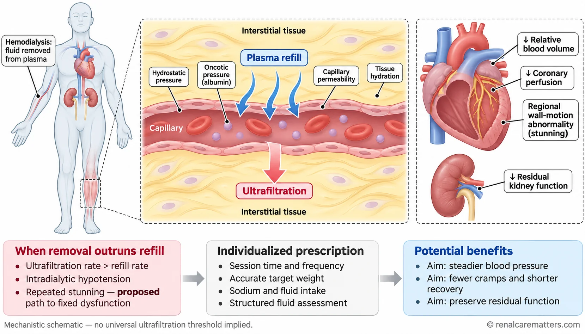
When ultrafiltration outruns plasma refill, blood volume and coronary perfusion fall. Progression from repeated stunning to fixed dysfunction is a proposed mechanism; the schematic implies no universal ultrafiltration threshold.When ultrafiltration outruns plasma refill, blood volume and coronary perfusion fall. Progression from repeated stunning to fixed dysfunction is a proposed mechanism; the schematic implies no universal ultrafiltration threshold.When ultrafiltration outruns plasma refill, blood volume and coronary perfusion fall. Progression from repeated stunning to fixed dysfunction is a proposed mechanism; the schematic implies no universal ultrafiltration threshold.When ultrafiltration outruns plasma refill, blood volume and coronary perfusion fall. Progression from repeated stunning to fixed dysfunction is a proposed mechanism; the schematic implies no universal ultrafiltration threshold.
© renalcarematters.comUrea clearance is one dimension of adequacy
Kt/V describes fractional clearance of urea, a small, freely diffusible marker whose removal tracks time and blood flow. It does not capture larger middle molecules such as β2-microglobulin, protein-bound solutes, volume status, anemia, inflammation, sleep, or mood — and it ignores residual kidney function, which clears middle molecules and protein-bound toxins continuously and is often lost silently after aggressive ultrafiltration. A patient can therefore meet every adequacy target and still feel unwell. The randomized HEMO Study showed that pushing urea clearance above the standard dose did not significantly reduce mortality: beyond an adequate floor, more urea removal is not the lever.
Recovery time is a physiologic summary signal
Post-dialysis exhaustion integrates hemodynamic stress, osmotic shifts, inflammation, and deconditioning. In 6,040 Dialysis Outcomes and Practice Patterns Study (DOPPS) participants, a recovery time longer than 12 hours was associated with higher first hospitalization (hazard ratio 1.22) and mortality (hazard ratio 1.47) compared with 2–6 hours, and with worse quality of life. Longer recovery also tracked greater intradialytic weight loss and lower dialysate sodium. A single question cannot prove causation, but it is a cheap screen that identifies whom to review. Fatigue itself is a Standardized Outcomes in Nephrology–Hemodialysis (SONG-HD) core outcome with a validated measure.
What tailoring has — and has not — proven
The appealing assumption is that an individualized intervention must outperform a uniform one. The trials below show three possible answers: it can help, it can fail, or the question can remain unanswered because the intervention was never delivered.
| Trial (design) | Population and intervention | Result (absolute where available) | What it teaches | Applicability to Philippine units |
|---|---|---|---|---|
| HEMO Study (randomized controlled trial, 2002) | 1,846 thrice-weekly HD patients; higher vs standard urea dose; high vs low flux | No significant mortality reduction with the higher dose | Beyond an adequate floor, more urea clearance is not the lever | High — the dose concept is universal |
| TiME trial (cluster pragmatic, 2019) | 7,035 incident patients, 266 units; default session ≥4.25 h vs usual care | Stopped early: sessions 216 vs 207 min; no difference in death or hospitalization | Inconclusive, not negative — the intervention barely separated | Moderate — longer sessions remain untested at scale |
| MyTEMP (cluster pragmatic, 2022) | 84 centers, 15,413 patients; dialysate 0.5–0.9 °C below body temperature vs 36.5 °C | Cardiovascular composite 21.4% vs 22.4%; adjusted hazard ratio 1.00; more patients felt uncomfortably cold | A "personalized" setting applied as center policy did not help and added discomfort | High — do not adopt cooler dialysate as a blanket policy |
| CONVINCE (randomized controlled trial, 2023) | 1,360 patients able to achieve ≥23 L convection; high-volume HDF (hemodiafiltration) vs high-flux HD | Death 17.3% vs 21.9% over median 30 months; hazard ratio 0.77 (95% CI 0.65–0.93); absolute risk reduction (ARR) ≈ 4.6 percentage points; number needed to treat (NNT) ≈ 22 | A modality change with outcome-level benefit in a selected population | Limited — HDF capability, ultrapure water, and cost restrict access; discuss where available |
| Symptom monitoring WIth Feedback Trial (SWIFT) pilot (cluster, 2023) | 4 Australian satellite units; electronic Integrated Palliative care Outcome Scale (IPOS)-Renal with 3-monthly clinician feedback | Pilot: response 54% in the feedback arm vs 89% in controls. Main trial (2,412 patients; late-breaking abstract, ASN Kidney Week 2026): more symptom conversations, but no improvement in health-related quality of life or fatigue; full publication pending | Collecting symptoms is not enough on its own; benefit needs a care pathway that can respond to them | Moderate — start with simple, low-burden questions |
Appraisal point
Personalization is a hypothesis about effect modification: it predicts that people differ in how they respond. That hypothesis must be tested with the same rigor as any drug. MyTEMP is the clearest counter-example — a physiologically plausible, individually calibrated intervention that did not move outcomes when delivered at scale. Conversely, CONVINCE shows that a uniform modality change can deliver benefit to an eligible population. Population trials are how we learn which personalizations are worth doing.
The precision toolkit: what each tool has shown
Residual kidney function is the most valuable thing to personalize around
Residual function clears middle molecules and protein-bound solutes continuously, eases volume control, and lowers the ultrafiltration burden of every session. Its loss accelerates with intradialytic hypotension and over-aggressive target-weight reduction. In the BioImpedance Spectroscopy to maintain Renal Output (BISTRO) trial, 439 incident patients with urine output above 500 mL/day across 34 United Kingdom centers were randomized to bioimpedance-guided or standard fluid management, with both arms following a structured fluid-assessment protocol. Time to anuria did not differ (cause-specific hazard ratio 0.75; 95% CI 0.46–1.23), and residual function declined more slowly than expected in both arms. A post hoc five-year analysis found better survival with more residual function at baseline and over two years — an association, not proof that preserving it causes survival. The practical lesson is that a disciplined clinical protocol, not the device, did the work; bioimpedance was nonetheless judged likely cost-effective in the United Kingdom.
| Tool or strategy | Best evidence | Result | Certainty and use |
|---|---|---|---|
| Bioimpedance-guided target weight | BISTRO randomized trial, 2025 | No difference in time to anuria vs a structured clinical protocol | Device optional; the structured protocol is the transferable element |
| Incremental (twice-weekly) start with residual function | TwoPlus randomized non-inferiority trial (protocol 2024; 350 patients planned) | Results pending; primary outcome death, hospitalization, or emergency visits at 2 years | Plausible and widely practiced where resources are scarce; not yet trial-proven — monitor urine output and urea clearance closely |
| Algorithmic anemia dosing (Anemia Control Model) | Propensity-matched cohort, 1,950 pairs, 2024 | Hospitalization 74.3 vs 86.7 per 100 patient-years; no survival difference (hazard ratio 0.93) | Associated with fewer admissions; residual confounding possible; decision support, not autonomous dosing |
| Personalized cooler dialysate | MyTEMP cluster trial, 2022 | No cardiovascular benefit; more cold discomfort | Not as blanket policy; individual use for a clear indication |
| High-volume hemodiafiltration | CONVINCE randomized trial, 2023 | Lower all-cause mortality in eligible patients | Strongest outcome data in this table; availability limited locally |
| Genomic or proteomic prescription | No outcome trials in maintenance dialysis | — | Research only; do not order tests to "personalize" a dialysis prescription |
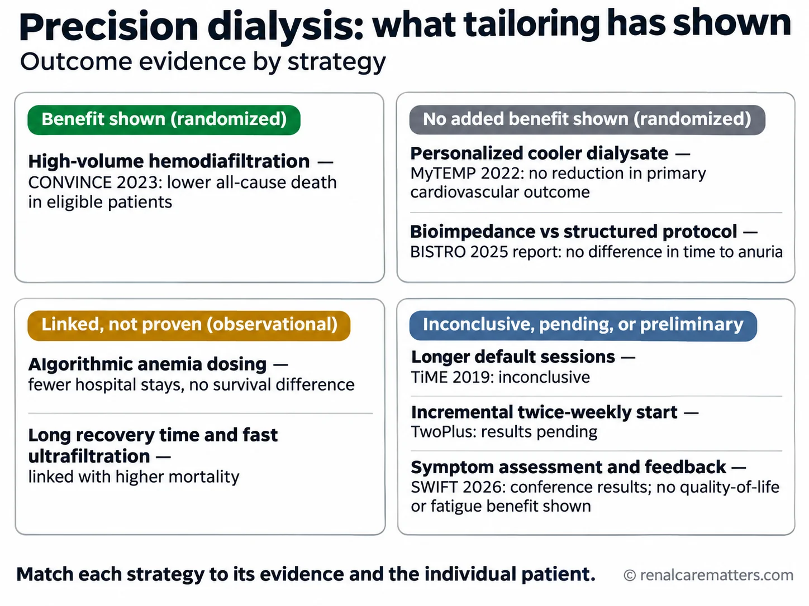
Which tailoring strategies have randomized evidence of benefit, which showed no added benefit, which are only associations, and which are inconclusive, pending, or preliminary.Which tailoring strategies have randomized evidence of benefit, which showed no added benefit, which are only associations, and which are inconclusive, pending, or preliminary.Which tailoring strategies have randomized evidence of benefit, which showed no added benefit, which are only associations, and which are inconclusive, pending, or preliminary.Which tailoring strategies have randomized evidence of benefit, which showed no added benefit, which are only associations, and which are inconclusive, pending, or preliminary.
- BISTRO
- BioImpedance Spectroscopy to maintain Renal Output
- SWIFT
- Symptom monitoring WIth Feedback Trial
Across the toolkit, the pattern is consistent with the lecture's message: the measurable gains so far come from structured clinical attention — protocols, decision support, and a modality with outcome evidence — rather than from a new biomarker.
Establish a baseline and name the clinical question
A proposed intake for a care-plan review: the person's stated priority in their own words; symptom timing relative to sessions; recovery time; treatment completion and shortened sessions; current volume and blood-pressure assessment; recent hospitalizations; prescription, access, and delivered dose; reconciled medicine list; and practical barriers. Use validated instruments where they add value — the site's dialysis PROMs calculator collects several — and avoid duplicate forms.
| Phase | Signals to capture | Typical personalized responses |
|---|---|---|
| Pre-treatment | Interdialytic weight gain and its drivers, pre-dialysis blood pressure and orthostasis, urine output, potassium, missed doses, sleep and appetite | Revisit target weight and sodium intake; adjust session length or frequency; protect residual function; reconcile medicines |
| Intra-treatment | Intradialytic blood-pressure trajectory, symptoms (cramps, dizziness, chest discomfort), achieved vs prescribed ultrafiltration, access function | Limit hourly ultrafiltration, extend time where feasible, review dialysate composition, assess access |
| Post-treatment | Recovery time, post-dialysis orthostasis, fatigue, sleep, function on non-dialysis days | Screen for anemia, depression, sleep apnea, deconditioning; link to exercise and psychosocial support |
Before choosing an intervention, write the clinical question. "Fatigue" is not a question; "Is this patient's post-dialysis fatigue driven by ultrafiltration rate, anemia, depression, sleep apnea, or deconditioning?" is. The KDIGO symptom-burden conference supports acknowledging and prioritizing symptoms while evaluating causes and feasible responses — avoid attributing every symptom to under-dialysis.
Review prescription fit without a universal recipe
A fit review considers interdialytic weight gain and its drivers (sodium intake, residual urine output, thirst), achieved versus prescribed ultrafiltration, intradialytic blood-pressure behavior and symptoms, target-weight accuracy, residual kidney function, delivered dose, dialysate composition, and the person's capacity for longer or more frequent sessions. Document benefits, burdens, and the patient's reasons for declining a proposed change; a refusal recorded with its reasoning is part of a person-centered plan. Detailed management lives in the dedicated fluid management, dry weight, adequacy, and prescription guides.
No universal threshold
This guide does not set an ultrafiltration ceiling, blood-pressure target, or session length. The observational 13 mL/kg/h association is a prompt to look harder at a patient, not a validated safe limit, and lowering the rate by extending time trades off against time burden — the outcome patients themselves rank highly.
Make modality and access a longitudinal Life-Plan
The Kidney Disease Outcomes Quality Initiative (KDOQI) 2019 vascular-access update introduced the ESKD (end-stage kidney disease) Life-Plan: access choices anchored to the person's anticipated sequence of modalities, preferences, and circumstances rather than a fistula-for-everyone rule. Revisit the plan after an unplanned start, a major change in health, or a change in support. These are proposed review triggers, not guideline-mandated intervals. Record referrals, the patient's understanding, unresolved barriers, and who follows up. In the Philippine setting, modality discussions should be honest about local feasibility — see why home hemodialysis is difficult to run locally and PhilHealth (Philippine Health Insurance Corporation) benefits for HD, PD, and transplant — and should include conservative and supportive care through advance care planning.
Give every reported symptom an accountable response
A symptom questionnaire with no response route is an incomplete implementation. The proposed pathway: concern received → urgent features checked → clinical assessment → agreed action → named owner and review date → result communicated to the patient. Unresolved concerns re-enter review rather than closing.
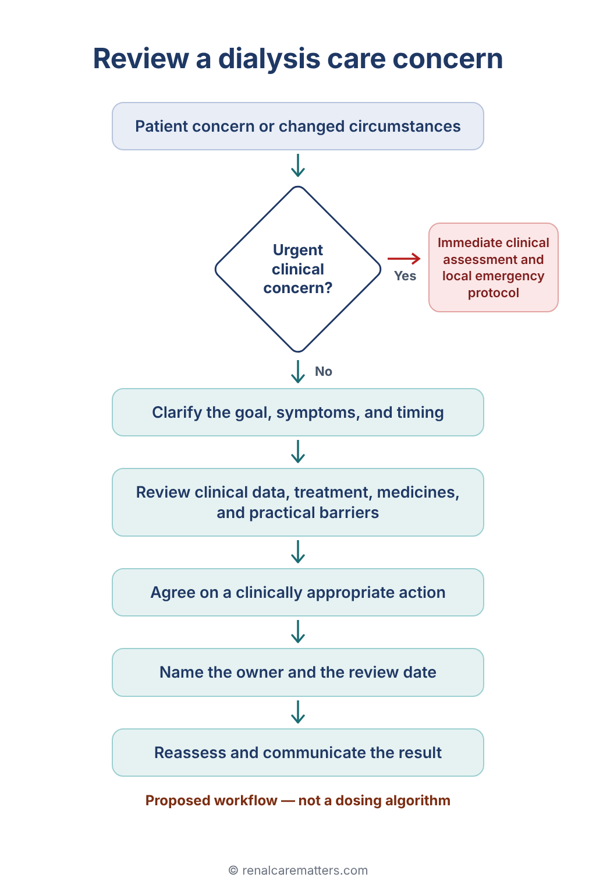
Proposed workflow linking a patient concern to clinical assessment and accountable follow-up. It is not a dosing algorithm.Proposed workflow linking a patient concern to clinical assessment and accountable follow-up. It is not a dosing algorithm.Proposed workflow linking a patient concern to clinical assessment and accountable follow-up. It is not a dosing algorithm.Proposed workflow linking a patient concern to clinical assessment and accountable follow-up. It is not a dosing algorithm.
© renalcarematters.comSuggested care-plan row fields: problem and onset; patient priority; working clinical explanation; relevant findings; proposed action and rationale; alternatives and burden; order if required; owner; follow-up interval chosen for the clinical situation; response; reason to revise. No single interval fits every symptom.
Digital tools: separate four claims
For any monitoring platform or prediction model, keep four claims apart: the system can collect data; a model can predict an event; clinicians can act on its alerts; and acting improves outcomes. Evidence for one step does not prove the next. Before adopting a named product, ask for its intended population, development and external-validation settings, calibration, error rates, alert burden, who owns each alert, privacy arrangements, and prospective outcome evidence. Preserve a human review step and a non-digital route so that patients without smartphones or literacy in the interface are not left behind — the SWIFT pilot's lower response in the feedback arm is a reminder that measurement itself has a cost.
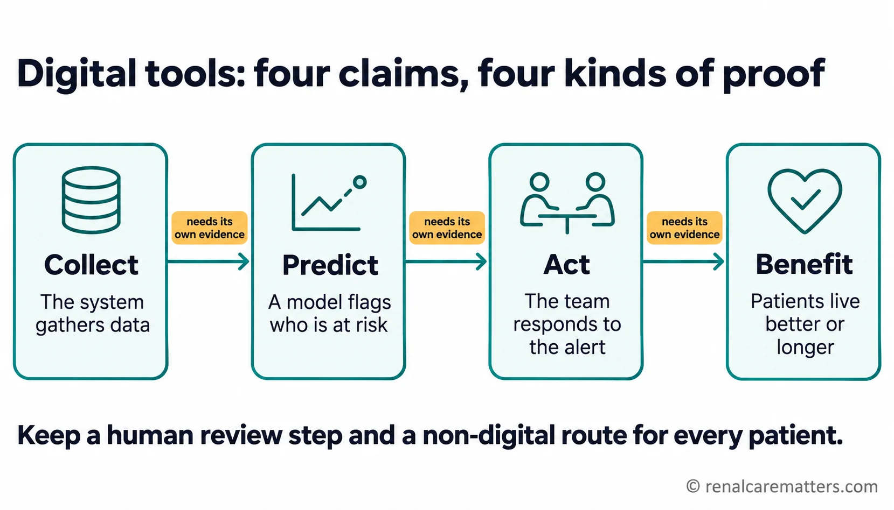
Evidence that a tool collects data or predicts risk does not prove that acting on it helps patients. Each step needs its own proof.Evidence that a tool collects data or predicts risk does not prove that acting on it helps patients. Each step needs its own proof.Evidence that a tool collects data or predicts risk does not prove that acting on it helps patients. Each step needs its own proof.Evidence that a tool collects data or predicts risk does not prove that acting on it helps patients. Each step needs its own proof.
© renalcarematters.comAdapt the delivery structure to the setting
These levels describe implementation maturity, not a hierarchy of clinical quality. Include invited caregivers only with the patient's consent. Confirm supply chains, training, emergency backup, and caregiver workload before offering home options. For context only: in the United States, the Centers for Medicare & Medicaid Services (CMS) links part of facility payment to quality measures; that is not a Philippine rule, and lecture shorthand about fixed laboratory targets should not be read as current policy.
Measure implementation without overstating causality
Proposed measures: proportion of patients with a documented priority; concerns with a named owner and communicated follow-up; referral completion; change in the patient's chosen activity and symptom experience; treatment completion and shortened sessions; staff time; caregiver burden; and safety events. Define the denominator, recall period, data source, missing-data handling, and review frequency before auditing. Use annotated run charts for local monitoring. A pre/post improvement may reflect case mix, secular trends, or better documentation; present local quality-improvement data separately from trial evidence.
Teaching cases with answer keys
All cases are invented for education.
A patient's spKt/V meets target, but they cannot attend a weekly family commitment because of exhaustion after every session. What do you do before changing the prescription?
Answer: Clarify timing and recovery time; review ultrafiltration rate, intradialytic blood pressure, target weight, hemoglobin, sleep, and mood; agree a measurable goal tied to the family commitment. Avoid both dismissing the complaint and reflexively increasing dose — HEMO shows extra urea clearance is not the lever.
A patient repeatedly misses Saturday sessions because transport fails. What is the actionable care-plan entry?
Answer: Document the barrier without judgment; assess immediate risk (potassium, volume); assign the unit coordinator to check alternative shifts or transport and report back by a set date; schedule follow-up. This is a proposed local workflow and does not guarantee resources exist.
A patient wants home therapy for schedule control; the invited caregiver describes exhaustion. What makes the decision informed?
Answer: Discuss medical suitability, the patient's preference, real home requirements, training and backup, caregiver willingness, alternatives, and local availability. Record the decision and when it will be revisited. A preference is not eligibility, and a willing patient is not a ready support system.
A newly started patient passes about 1 liter of urine a day, works full time, and asks to come only twice weekly. What do you weigh?
Answer: Incremental hemodialysis is plausible when residual function is meaningful, but trial evidence (TwoPlus) is pending. If chosen, document the rationale, measure urine volume and urea clearance regularly, set explicit criteria to step up to thrice weekly (falling urine output, rising potassium or weight gains, symptoms), and revisit the decision on a defined schedule.
A colleague proposes switching every patient to personalized cooler dialysate to reduce cardiovascular events. How do you respond?
Answer: MyTEMP tested exactly this as a center-wide policy in 15,413 patients: no reduction in cardiovascular death or admission (adjusted hazard ratio 1.00) and more patients felt uncomfortably cold. Reserve temperature adjustment for individual patients with a clear indication, reassess its effect, and do not adopt it as blanket policy.